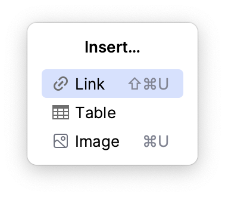

Quickly add images, links, and tables
Press Alt+Insert to open the Insert popup and quickly generate markup for images, links, and tables:

Option | Description | Example |
|---|---|---|
Last modified: 12 1월 2024
Press Alt+Insert to open the Insert popup and quickly generate markup for images, links, and tables:

Option | Description | Example |
|---|---|---|